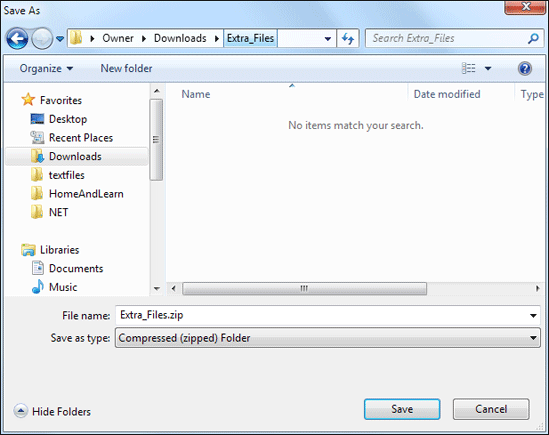
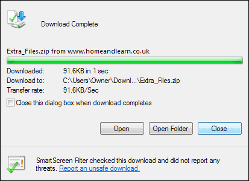
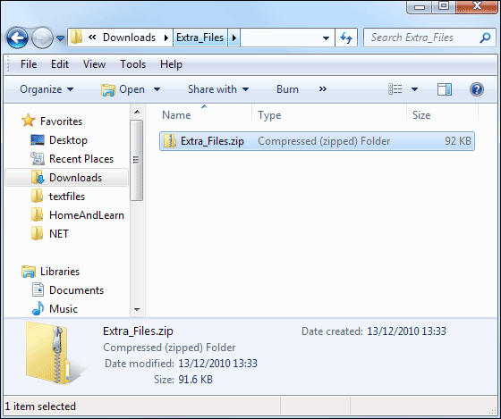
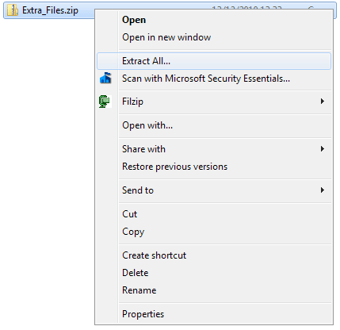
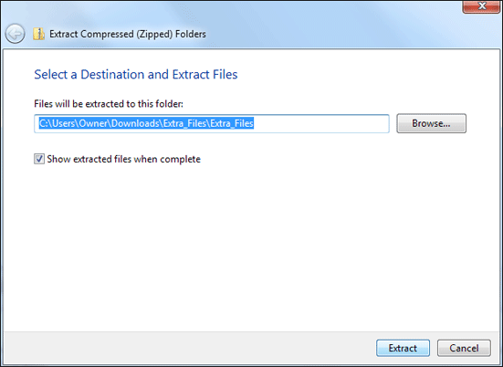
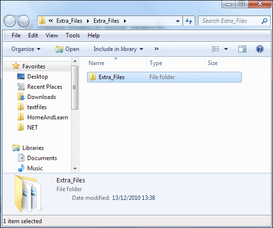
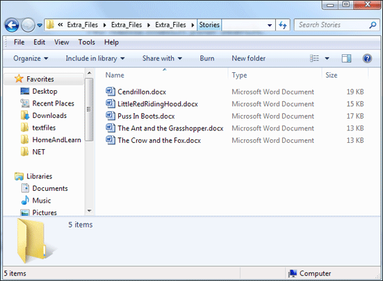
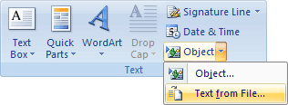
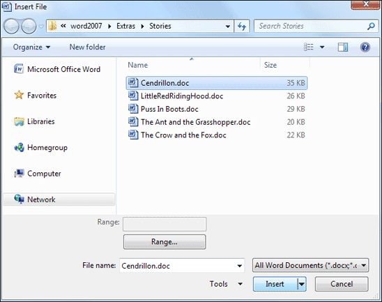

Free
computer Tutorials
|
Free
computer Tutorials
|
|
 home home |
|
|||||
Microsoft Word 2007 to 2010Downloading the StoriesIn this section, we're going to create a booklet. Our booklet will have a cover page, a contents page, page numbering, and some clip art. You'll also learn about section breaks, and about Word Styles. The contents for the booklet can be found in the Extra_Files folder that you need to download. They are a series of short tales that we have translated from the original French. Before doing so, however, if you don't know how to save and access a zip file, read below. Get the Stories for your Booklet
How to Save and Open Zip FilesClick on the link above with your right mouse button. From the menu that appears select Save Target As (or Save Link As if you use Firefox to browse the internet). You'll then see a dialogue box where you can choose a location on your computer to save the file:  In the image above, we've created a new folder called Extra_Files, which we've placed in the Downloads folder. We're saving the zip file to this folder. Click the Save button and the file will be downloaded:  Click the Close button, and not the Open or Open Folder buttons. Now that you have downloaded the zip file, you need to unzip it. Open up an explorer window by clicking the round Start button in the bottom left of Windows 7 or Windows Vista. From the menu, select Computer. Navigate to where on you computer you saved your zip file to:  To unzip this, right click the file and select Extract All.  You'll then see a dialogue box asking you where you want to save the extracted files to:  If you want to select a different location to the one in the box, click the Browse button. But click Extract and you'll see this:  Double click the Extra_Files folder to see inside it:  The contents of the folder are the five stories that will make up your booklet. With the files downloaded and extracted, we can make a start. So click the Office button and click the New item from the menu, if you have Word 2007. If you have Word 2010, click the File tab then the New item on the left menu. From the dialogue box that appears, select the Blank document template. Then click the Create button in the bottom right. Save your new blank document with the name Fairy Tales.
Inserting a StoryThe first thing to do is to insert the stories. Click the Insert tab at the top of Word and locate the Text
panel. Click the arrow next to the Object item, and select Text from
file:  When you click on Text from file a dialogue box will appear. Navigate to your Extra_Files > Stories folder and select the Cendrillon file:  Click the Insert button to insert the file into your blank document. Click back on to the Home tab, and note the Font. It will probably be the default Calibri at a size of 11 points. Don't worry if it isn't as we're going to change this in the next lesson. <--Back to the Word Contents Page View all our Home Study Computer Courses
|
||||||
|